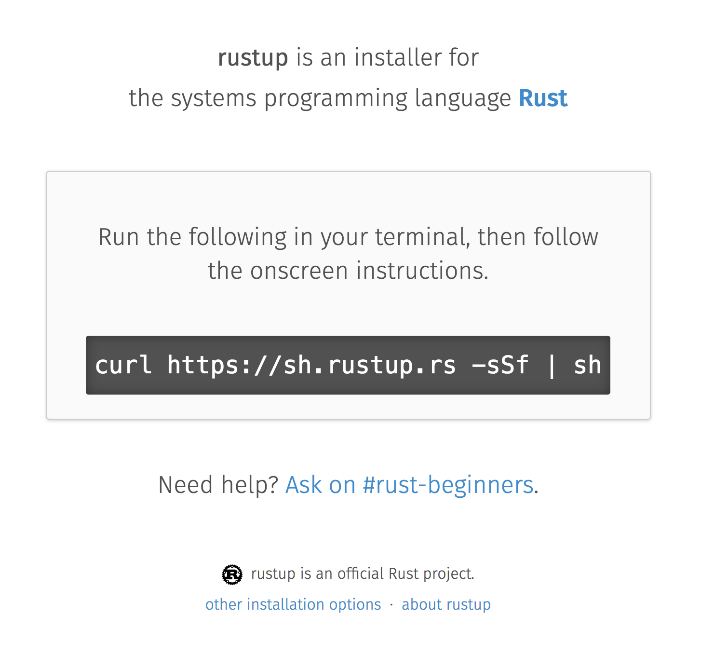
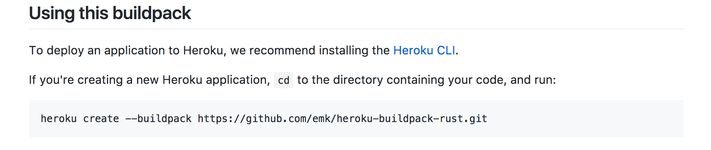

(Nunca) Ouvi falar de Rust…
Mas como eu faço um site?
Olá pessoal!
Se você nunca ouviu falar de Rust…
Vou contar o que é Rust
Vou contar como eu conheci Rust
E alguns problemas que a linguagem me ajudou a resolver
Mas se você já ouviu falar…
Vou mostrar alguns passos para seguir aprendendo
Em 2015
Comecei a me envolver com o deploy das aplicações do meu projeto
NPM + Python + Java + Closure Compiler + SCons + RVM…
Eu queria uma maneira simples de executar aplicações
Objetivo
1 arquivo binário e cross-plataforma
As opções
"Pra escrever binário tem que ser C?"
Rust foi uma das opções na minha busca por alternativas
"Mas o que é Rust?"
Rust
Rust é uma linguagem de programação de sistemas que roda incrivelmente rápido, previne falhas de segmentação, e garante segurança entre threads.
"É uma linguagem bem moderna"
Uma linguagem com várias características funcionais:
- Imutável por padrão
- Não tem null ou undefined
- Pattern-matching
- Closures
- Structs e Enums
O que me chamou atenção para seguir aprendendo:
- Gera binários
- Cross-plataforma
- Preocupação em boas mensagens de erro
- Focado em baixo nível
- Mas com uma experiência de linguagem de alto nível
- Linguagem com investimento da Mozilla
"Por que escolheram criar uma linguagem de baixo nível?"
Quantos falhas podem acontecer em um programa de baixo nível?
BufferOverflow, Segmentation Fault, Use After Free…
Rust tem um sistema de tipos que previne diversos erros de gerenciamento de memória, em tempo de compilação
Gerenciamento de memória sem Garbage Collector
Mozilla Quantum
Todas essas características criam um ambiente ideal para avançar com segurança
Exemplo de coisas que Rust previne apenas com o compilador
Vamos ver um pouco de Rust
fn main() { let data = vec!(); println!("Data", data); }
error: argument never used
--> src/main.rs:3:22
|
3 | println!("Data", data);
| ^^^^
error: aborting due to previous error
fn main() { let data = vec!(); println!("Data {}", data); }
error[E0277]: the trait bound
`std::vec::Vec<_>: std::fmt::Display` is not satisfied
--> src/main.rs:3:25
|
|println!("Data {}", data);
| ^^^^
`std::vec::Vec<_>` cannot be formatted with the default
formatter; try using `:?` instead if you are using
a format string
|
= help: the trait `std::fmt::Display`
is not implemented for `std::vec::Vec<_>`
= note: required by `std::fmt::Display::fmt`
error: aborting due to previous error
^^^^ `std::vec::Vec<_>` cannot be formatted with the default formatter; try using `:?` instead if you are using a format string
fn main() { let data = vec!(); println!("Data {:?}", data); }
error[E0282]: type annotations needed --> src/main.rs:2:16 | 2 | let data = vec!(); | ---- ^^^^^^ cannot infer type for `T` | | | consider giving `data` a type | error: aborting due to previous error
error[E0282]: type annotations needed
$ rustc --explain E0282
fn main() { let data : Vec<char> = vec!(); println!("Data {:?}", data); }
Data []
Imagine como seria uma base de código bem complexa
- Código com threads
- Processamento de imagens em paralelo
- Coordenar muito acesso de I/O
Em resumo, imagine quão complexo um navegador é por traz dos panos?
Existe algum problema neste código?
use std::thread; use std::time::Duration; fn main() { let data = vec!(); thread::spawn(|| { data.push('a'); }); thread::spawn(|| { data.push('b'); }); thread::sleep(Duration::from_millis(50)); println!("Data {:?}", data); }
use std::thread; use std::sync::{Arc, Mutex}; use std::time::Duration; fn main() { let data = Arc::new(Mutex::new(vec!())); let writer = data.clone(); thread::spawn(move || { let lock_result = writer.lock(); match lock_result { Ok(mut locked_writer) => locked_writer.push('a'), Err(_) => panic!("Could not acquire lock a"), } }); let writer = data.clone(); thread::spawn(move || { let mut locked_writer = writer.lock().expect("Could not aquire lock b"); locked_writer.push('b'); }); thread::sleep(Duration::from_millis(50)); println!("Data {:?}", data); }
E mais possibilidades para ajudar a definir o seu sistema
#[derive(Debug)] struct Pedido { id: i32 } fn novo_pedido() -> Pedido { Pedido { id: 1 } } fn enviar_pedido(pedido: Pedido) { // Codigo que envia o pedido } fn main() { let pedido = novo_pedido(); enviar_pedido(pedido); println!("Dados do pedido: {:?}", pedido); }
error[E0382]: use of moved value: `pedido`
--> src/main.rs:18:39
|
16 | enviar_pedido(pedido);
| ------ value moved here
17 |
18 | println!("Dados do pedido: {:?}", pedido);
| ^^^^^^
value used here after move
#[derive(Debug)] struct Pedido { id: i32 } fn novo_pedido() -> Pedido { Pedido { id: 1 } } fn enviar_pedido(pedido: Pedido) { // Codigo que envia o pedido } fn main() { let pedido = novo_pedido(); println!("Dados do pedido: {:?}", pedido); enviar_pedido(pedido); }
Dados do pedido: Pedido { id: 1 }
Mas você não precisa se preocupar com tudo isso agora
Essas são exemplos de possibilidades e potencial da linguagem
Você pode aprender aos poucos
Quem já ouviu falar de Rust?
Ah, e esse é o mascote, Ferris

(E dá pra costurar um pra você)
Agora, como faço um site?
Vamos fazer um site?
Um Site:
- Fácil de deployar
- Leve
- Aproveitando todas as vantagens que eu já comentei
Primeiro passo: Instalando as ferramentas
Siga as instruções no site do Rustup
Esse é o gerenciador de versões do Rust
- Vai instalar todas as ferramentas
- Suporta Linux, Mac e Windows
- Ajuda a manter tudo atualizado
No final estará dispoível:
- rustup: o gerenciador de versões
- cargo: o gerenciador de projetos e de dependências
- rustc: o compilador
- rustdoc: o gerador de documentação
- rust-gdb e rust-lldb: debuggers
Criando nosso projeto
$ cargo new --bin meu-site-em-rust
$ cargo run Compiling meu-site-em-rust v0.1.0 Finished dev [unoptimized + debuginfo] target(s) in 1.54 secs Running `target/debug/meu-site-em-rust` Hello, world!
Vamos criar uma primeira página
Vamos criar um arquivo em src/index.html com seguinte conteúdo
<!doctype html> <html> <head> <meta charset=utf-8> <title>Olá TDC POA 2017</title> </head> <body> <h1>Olá mundo</h1> <marquee>Olá TDC</marquee> </body> </html>
Adicionando um framework web
Vamos usar o framework Nickel para nos ajudar

Adicione a dependencia no arquivo Cargo.toml
[dependencies] nickel = "0.10.0"
Alterando nosso arquivo
Agora vamos ver um pouco de Rust, aos poucos.
Vamos abrir o arquivo src/main.rs.
Primeiro, importamos e incluímos algumas referências do framework web.
#[macro_use] extern crate nickel; use nickel::{Nickel, HttpRouter};
Incluímos todo o conteúdo do nosso arquivo HTML em uma constante.
const INDEX: &str = include_str!("index.html");
Criamos um novo servidor Nickel.
let mut server = Nickel::new(); server.get("/", middleware!(INDEX));
Configuramos a porta a partir da variável de ambiente PORT.
Vamos usar a porta 3000 de fallback.
let port = std::env::var("PORT").unwrap_or("3000".into()); let url = format!("0.0.0.0:{port}", port = port);
Iniciamos o nosso servidor, com uma mensagem caso haja erros.
println!("On {}", url); server.listen(url) .expect("Não conseguimos iniciar o servidor");
No final teremos isso:
#[macro_use] extern crate nickel; use nickel::{Nickel, HttpRouter}; const INDEX: &str = include_str!("index.html"); fn main() { let mut server = Nickel::new(); server.get("/", middleware!(INDEX)); let port = std::env::var("PORT").unwrap_or("3000".into()); let url = format!("0.0.0.0:{port}", port = port); println!("On {}", url); server.listen(url) .expect("Não conseguimos iniciar o servidor"); }
Agora podemos criar o nosso executável
$ cargo build --release
E executar:
$ ./target/release/meu-site-em-rust
On 0.0.0.0:3000
Listening on http://0.0.0.0:3000
Ctrl-C to shutdown server
TA-DA!

Parabéns!
Você tem um site em Rust.

E tudo em um só binário!
E tem demo no Heroku!
"Mas dá pra fazer mais alguma coisa?"
Vamos fazer uma chamada web
É tão fácil como outras linguagens, mesmo sendo uma linguagem de sistemas
Vou seguir a receita disponível no Rust Cookbooks
Criando um novo projeto novamente
$ cargo new --bin minha-chamada-em-rust
$ cargo run Compiling minha-chamada-em-rust v0.1.0 Finished dev [unoptimized + debuginfo] target(s) in 1.54 secs Running `target/debug/minha-chamada-em-rust` Hello, world!
Adicionando uma lib para chamadas
Já existem diversas bibliotecas disponíveis no Crates.io
Vamos usar o Reqwest nesse projeto
Adicione a dependencia no arquivo Cargo.toml
[dependencies] reqwest = "0.8.0"
Alterando nosso binário
Vamos importar a nossa biblioteca e algumas funções de I/O
extern crate reqwest; use std::io::Read;
E criar nossa função
fn main() { let mut response = reqwest::get("https://httpbin.org/get") .expect("Could not connect"); println!("Resposta: {:?}", response); let mut content = String::new(); response.read_to_string(&mut content); println!("Conteudo do site: {}", content); }
TADA - Vamos executar!
$ cargo run
Agora você tem um código para fazer chamadas na internet:
- cross-plataforma
- binário
- com baixo uso de memória, sem o risco de "dar tiros no pé"
- que não precisa de ficar instalando várias dependências para usar
Bem similar a outras linguagens?
"Uma pergunta…"
É fácil aprender Rust?
Eu passei semanas batendo a cabeça em conceitos que eram novos para mim.
- Tenho um background mais alto nível (Ruby/Java/JavaScript)
- Tive que aprender sobre stack e referências
- O conceito de
lifetimeeborrowdemoraram pra entrar na minha cabeça
Rust trouxe novos conceitos para minha caixa de ferramentas.
E eu tenho me divertido muito!
A comunidade é muito aberta e me ajudou bastante.
Muitas pessoas estão disponíveis para ajudar no #rust-beginners, no fórum e até no #rust-br.
Como eu coloco meu site no Heroku?
Eu usei esse buildpack.
Só existe o Nickel para web?
Já existem vários frameworks, mas ainda é um ecossistema em desenvolvimento.
Uma boa lista está disponível no site Are We Web Yet?

Se você estiver buscando algo mais experimental:
Confira o Rocket, que usa uma sintaxe mais sucinta…

Mas depende de funcionalidades do compilador ainda em desenvolvimento.
Preciso usar rustup?
É o método mais recomendado pela comunidade
- É a maneira mais fácil de manter tudo atualizado
- Rust tem uma versão nova a cada 6 semanas
- Fica mais fácil de acompanhar as novas funcionalidades
Rust está disponível nos gerenciadores de pacotes dos sistemas operacionais também, mas pode demorar um pouco mais para receber atualizações.
Como conectar em um banco?
O Diesel pode ajudar nisso.

Já existem empresas usando Rust?
Sim. Inclusive o Firefox do seu computador já tem partes em Rust.
Algumas empresas: Dropbox, Chef, Tilde, Sentry, CoreOS, Mozilla e tem mais na lista do site.
Só dá pra usar Rust para a web?
Não, dá pra usar para muitas outras lugares!
(Se eu fosse falar todos os exemplos, seria uma outra apresentação inteira)
Dois fortes* espaços para aplicar a linguagem:
- Ferramentas de suporte (CLIs, build, processadores de texto, etc)
Extensões de linguagens (Gems, npm, python extensions, FFI)
*IMHO
Machine Learning, Ruby, Python, Haskell, Node.js, WebAssembly, Container, Network Platform, Embedded…
Espero que tenham gostado de Rust
E se quiser seguir conhecendo
- Tem um livro de graça no site [EN]
- #rust-beginners é um ótimo canal para tirar dúvidas rápidas
- Existe o #rust-br para falar em portugues
- O grupo @rustlangbr no Telegram
- Meetups
- Exercicios
- E grupo de estudo online em portugues
Se você se interessou por Rust, pode entrar em contato comigo também, que eu quero te ajudar com os próximos passos.
Bruno Tavares - @bltavares
Links
- intorust(); screencasts
- Podcast da Lambda 3 - Em portugues
- https://github.com/bltavares/meu-site-em-rust
- Imagens do Ferris
- http://edunham.net/2016/04/11/plushie_rustacean_pattern.html
- https://rustup.rs/
- https://github.com/nickel-org/nickel.rs
- https://ouvi-falar-de-rust.herokuapp.com/
- https://riot.im/app/#/room/#mozilla_#rust-beginners:matrix.org
- https://users.rust-lang.org/
- https://riot.im/app/#/room/#mozilla_#rust-br:matrix.org
- https://github.com/emk/heroku-buildpack-rust
- http://www.arewewebyet.org/
- https://rocket.rs/
- https://diesel.rs/
- https://www.rust-lang.org/en-US/friends.html
- http://www.arewelearningyet.com/
- https://usehelix.com/
- https://github.com/mitsuhiko/snaek
- https://github.com/mgattozzi/curryrs
- https://www.neon-bindings.com/
- https://hackernoon.com/compiling-rust-to-webassembly-guide-411066a69fde
- https://blogs.oracle.com/developers/building-a-container-runtime-in-rust
- https://tokio.rs/
- https://github.com/rust-embedded